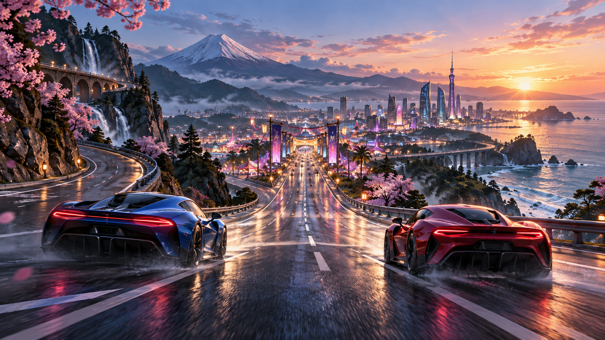

Forza Horizon 6 Comes to PS5 on January 26 With Cross-Save and a Disc Edition
Forza Horizon 6 reaches PS5 on January 26, 2027 with cross-save, cross-play, a physical edition and two performance modes.

What happened
Playground Games announced on October 8, 2026 that Forza Horizon 6 will launch for PlayStation 5 on January 26, 2027. The Standard and Deluxe editions arrive that day, while Premium Edition owners can begin five days earlier on January 21. Pre-orders are open through PlayStation Store, and a PS5 disc edition will be sold through supporting retailers.
Panic Button is developing the PS5 version in collaboration with Playground Games and Turn 10 Studios. The announcement confirms a 4K 30 FPS Quality mode and a 60 FPS Performance mode. Its trailer was captured on a base PS5, but Playground has not published the Performance mode resolution or separate PS5 Pro specifications.
Why it matters
The PS5 release supports cross-platform play and cross-save with the Xbox and Steam versions. User-generated content is also shared across platforms, including EventLab races, Prefabs, Garages, Estates, Liveries and Tuning Setups. That means PS5 players enter an established content pool rather than an isolated launch community, and existing players can carry progress to the new version.
The timing also changes the value comparison between editions. Forza Horizon 6 first launched on Xbox Series X|S and PC in May 2026, so the PS5 version arrives alongside its first Premium Expansion. That paid expansion releases on every platform on January 21 and is included with the Premium Edition, Premium Upgrade and Expansions Bundle; a separate free content update is also planned for the PS5 launch window.
The Arcade World take
For PS5 owners, the important story is parity rather than novelty. Cross-save, cross-play and shared community creations remove three common penalties of a late port, while the disc option provides a physical purchase route that many delayed releases skip. However, the official post does not say whether every game file will be playable from the disc without a download, so collectors should verify the final packaging before treating it as an archival copy.
Premium early access is not the same as an earlier base-game release: it moves entry forward by only five days and bundles paid extras. Players who mainly want the core driving game can wait for January 26, when independent technical analysis should make the Quality-versus-Performance tradeoff clearer. Existing Xbox or Steam players gain the most from cross-save if they specifically want to move between systems rather than repurchase the same content for its own sake.
What happens next
The next confirmed milestone is January 21, when Premium early access begins on PS5 and the first Premium Expansion launches across all platforms. Standard and Deluxe access follows on January 26, together with retail availability at participating stores. Playground Games says more information about the free update will arrive closer to release.
Pricing, retailer stock and edition contents can vary by region. Final download size, disc contents, the 60 FPS mode's resolution, PS5 Pro enhancements and any account requirements beyond the PlayStation Store listing remain details to verify before launch. No rumor about those points should be treated as confirmed until Playground Games, Xbox or PlayStation publishes it.
Sources and further reading
Keep exploring
Open the Game Room or visit the latest stories.